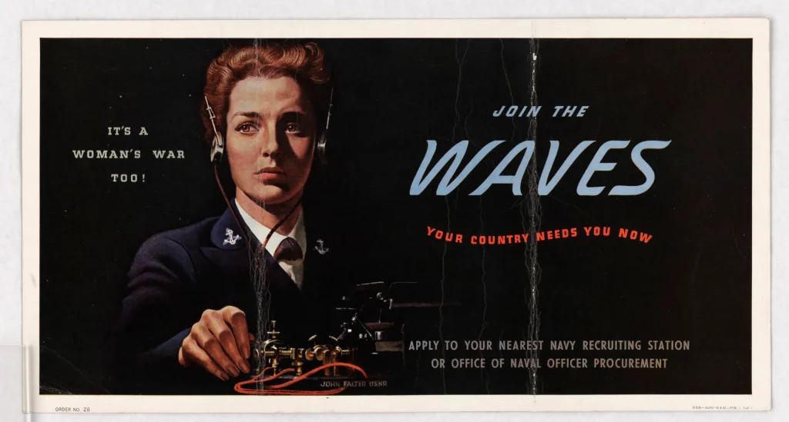

WAVES: Bu Bir Kadın Savaşı!
Amerika Birleşik Devletleri’nin İkinci Dünya Savaşı’na girmesinin üzerinden bir yıldan az bir süre geçmişti ki, Donanma ciddi bir insan gücü açığıyla karşı karşıya kaldı. Bir çözüm arayan Donanma Kadın Danışma Konseyi, Kongre’ye kadınların Donanma’da görev yapmasına izin veren bir yasa çıkarmasını önerdi. Bu kadınlar iç cephede donanmanın kıyı istasyonlarını işletebilecek ve erkekleri yurtdışında aktif deniz görevi için serbest bırakabilecekti.

Kadınların Donanmaya katılması fikri ne Kongre’de ne de Donanma’da popülerdi. Ancak yoğun tartışmaların ardından 21 Temmuz 1942’de Kongre, ABD Deniz Kuvvetleri’nin kadın kolu olan WAVES (Women Accepted for Volunteer Emergency Service – Gönüllü Acil Durum Hizmetine Kabul Edilen Kadınlar) birimini kuran yasayı kabul etti. Başkan Franklin D. Roosevelt sekiz gün sonra yasayı imzaladı. Bu kurumun oluşturulmasında Donanmanın Kadın Danışma Konseyi, Dr. Margaret Chung ve First Lady Eleanor Roosevelt’in amansız çabaları büyük rol oynamıştır.
Kadınların artık deniz subayı olarak ve er düzeyinde hizmet vermelerine izin verilmişti. Ancak Kongre, kadınların bu kapsama alınmasının tamamen savaş zamanı acil durum önlemi olduğunu açıkça belirtmiştir. Yasa, DALGALARIN sadece savaş süresi artı altı ay boyunca ve sadece Amerika Birleşik Devletleri kıtasında ve Hawaii topraklarında hizmet etmelerine izin verilmesini öngörüyordu. Donanma gemilerine ya da savaş uçaklarına binmelerine izin verilmiyordu ve kadınlar kolu dışında komuta yetkileri yoktu.
İlk müdürleri Yüzbaşı Mildred McAfee, WAVES’in denizci erkeklerle aynı maaş ve sosyal hakları alması için başarılı bir kampanya yürüttü. Yüzbaşı McAfee ayrıca WAVES’in kamuoyunda olumlu bir imaja sahip olmasıyla da ilgilenmiş ve tüm WAVES’in uyması gereken katı güzellik ve edep kuralları belirlemiştir. İlk yılının sonunda WAVES 770 subay ve 3.109 er kadına eğitim vermiştir. Subay müfredatı iki aylık yoğun bir eğitimden oluşuyordu. Bu, sivil kadınları tam eğitimli deniz subaylarına dönüştürmek için çok kısaydı, ancak onları denizcilik ortamı ve idari politika hakkında temel bir anlayışla donattı.
Kadın subaylar eğitimlerini tamamladıktan sonra tıp ve mühendislik gibi daha önce erkeklerin sahip olduğu alanlara girdiler. Muvazzaf kadınlar ise katip ve paraşüt teçhizatçısı olarak görev yapmıştır. İster subay ister er olsun, pek çok kadın işyerinde erkek meslektaşlarının düşmanlığına maruz kalmıştır. Programı kuran mevzuatta ırktan bahsedilmiyordu ve birçok siyahi kadın katılmak için başvuruda bulundu. Ancak Donanma Bakanı Frank Knox, siyahi kadınların WAVES’e katılmasına izin vermeyi kesin bir dille reddetti. Knox’un Nisan 1944’te ölümünden sonra, halefi James Forrestal aktivistlerin baskısıyla bu politikada reform yaptı ve 19 Ekim 1944’te Başkan Roosevelt Donanmaya WAVES’i entegre etme yetkisi verdi. Eğitim programları entegre edilmiş olsa da, siyahi kadınlar hala bazı donanma üslerinde ayrı yaşam alanları da dahil olmak üzere haksız muameleye maruz kalıyordu.
İlk siyahi WAVES subayları Teğmen Harriet Pickens ve Asteğmen Frances Wills 13 Kasım 1944’te askere alınmış ve 21 Aralık 1944’te görevlendirilmişlerdir. Pickens ve Wills subay eğitimine birlikte katıldılar. Eğitimlerini tamamladıktan sonra, Pickens’ın paylaştıkları odanın en üst ranzasından indiği ve Wills’e sırıtarak “Başardık dostum” dediği anlaşılıyor.
Pickens, Hunter College’da beden eğitimi programına atanmış ve daha sonra New York’taki Donanma Malzeme Yeniden Dağıtım ve İmha İdaresi’nin müdürü olarak çalışmış, Wills ise New York’taki Hunter College’da erler için sınıflandırma testi yöneticisi olmuştur.
Temmuz 1945 itibariyle 8.475 subay ve 73.816 er WAVES savaş çabalarına katkıda bulunuyordu ve bunların 72’sini siyahi kadınlar oluşturuyordu. WAVES, Amerika Birleşik Devletleri ve Hawaii’de bulunan 900 kıyı istasyonunda görev yapıyordu. Savaş sona erdikten sonra terhis süreci 1 Ekim 1945’te başladı ve Eylül 1946’da tamamlandı. O dönemde terhisin kadınların ordudan tamamen çıkarılacağı anlamına gelip gelmediği net değildi. Sadece iki yıl sonra, 1948’de Kongre Kadınların Silahlı Hizmetlere Entegrasyonu Yasasını kabul etti. O tarihten itibaren kadınlar Ordu, Donanma, Deniz Piyadeleri ve Hava Kuvvetleri’nde daimi ve düzenli üye olarak görev yapabileceklerdi. Ancak, hizmet verebilecek kadın sayısı tüm personelin yüzde 2’si ile sınırlandırıldı ve kadın hizmet üyelerinin savaşa tam olarak katılmaları yasaklandı. Bu sınırlamalara rağmen yasa, kadınların Silahlı Kuvvetlerde hizmet etme hakkı için önemli bir adımdı.